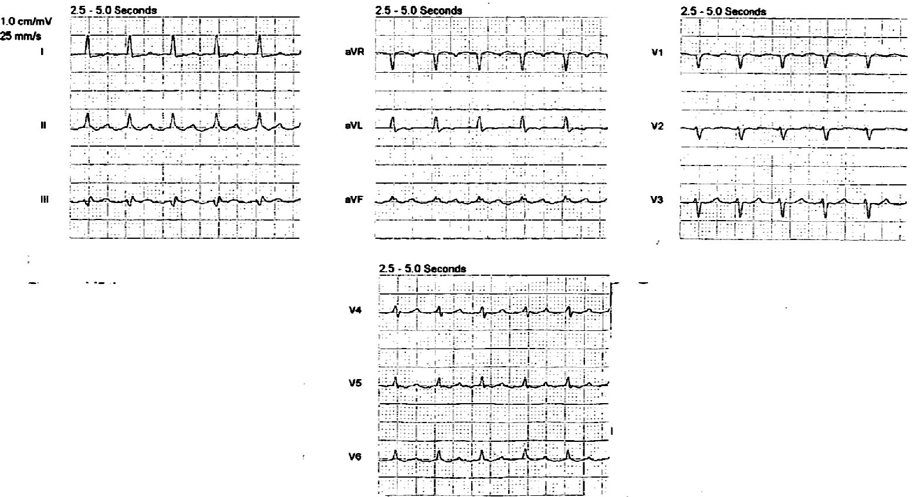
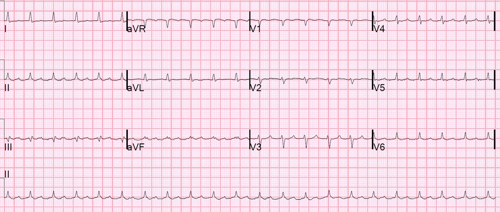
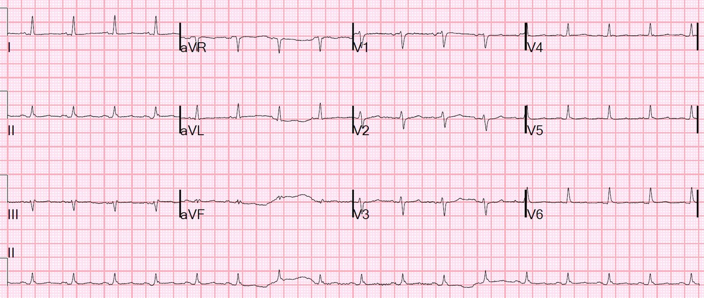
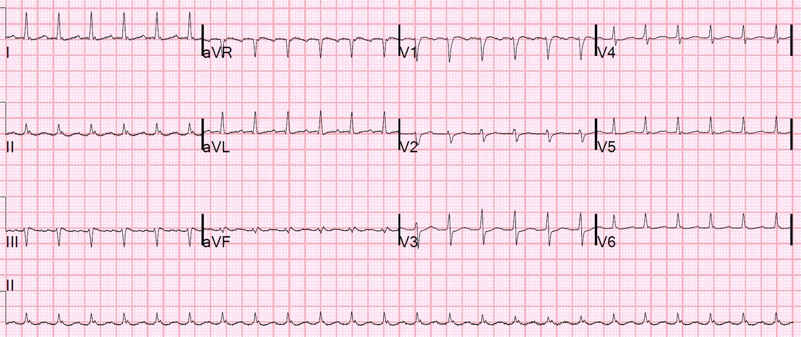
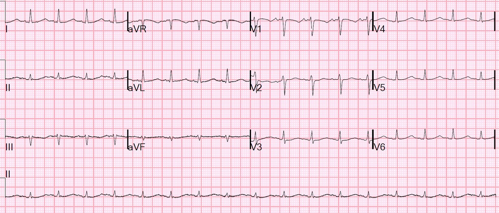
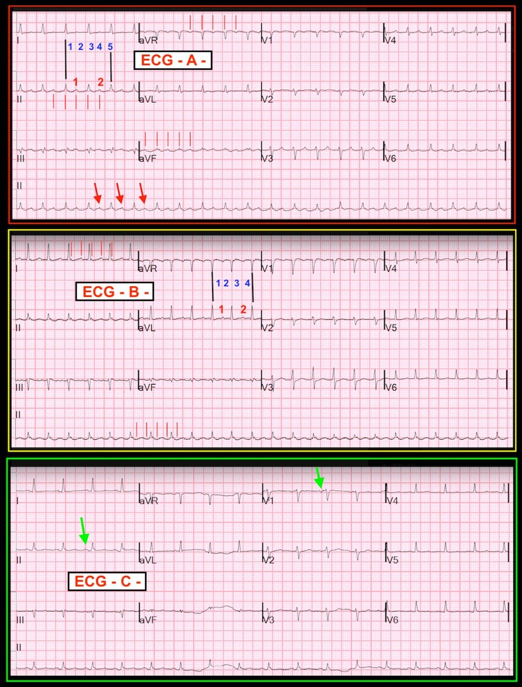

03/08/2018 — Một người đàn ông trung niên đau ngực, tụt huyết áp và nhịp tim nhanh
Bản dịch tiếng Việt của bài "A Middle-Aged Man with Chest pain, Hypotension and Tachycardia" – Dr. Smith’s ECG Blog. Giữ nguyên toàn bộ 8 hình ảnh và 1 video của bản gốc.
Vào buổi tối, một người đàn ông trung niên than đau ngực tại viện dưỡng lão. Điều dưỡng thấy ông có huyết áp 50/30 và tần số tim 130 nên đã gọi đội cấp cứu ngoài viện (EMS).
Ông còn tỉnh, mạch 130 và huyết áp 50/30. Bắt đầu truyền dịch.
Bệnh nhân đến viện còn tỉnh táo nhưng da lạnh và ẩm. Cơn đau ngực của ông mơ hồ. Ông than khó thở mạn tính. Ông có nhắc đến “ung thư” và “ngực”.
Đây là điện tâm đồ trước viện của ông, tôi xem ngay trong lúc bác sĩ nội trú làm siêu âm tim:


Có nhịp nhanh QRS hẹp với tần số 130. Có phải nhịp xoang không? Tôi không thấy được sóng P. Có điện thế thấp.
Huyết áp tăng lên 70/40 sau khi truyền một ít dịch.
Đây là hình siêu âm tim do bác sĩ nội trú thực hiện trong lúc tôi xem điện tâm đồ:
Hình này cho thấy tràn dịch màng ngoài tim lượng rất lớn.
Tĩnh mạch chủ dưới (IVC) rất căng giãn và không có đường B.
Chúng tôi không có được mặt cắt thật tốt của thất phải (RV) để đánh giá tình trạng xẹp.
Một điện tâm đồ tại khoa cấp cứu (ED) được ghi:


Bạn muốn làm gì tiếp theo?
Các điện tâm đồ: có nhịp nhanh QRS hẹp, đều, tần số vẫn đúng 130, không có sóng P và cũng không thay đổi gì so với điện tâm đồ trước viện. Các nhịp nhanh vào lại (cuồng nhĩ, PSVT, AVRT, VT) có tần số tim đều và không đổi, trong khi nhịp nhanh xoang thường sẽ thay đổi tần số dần dần theo các điều kiện khác nhau (chẳng hạn, sau khi truyền dịch và huyết áp tăng, tần số nhịp nhanh xoang có thể giảm từ 130 xuống 125). Cũng có thể là PSVT, nhưng ít khả năng hơn nhiều, nhất là với tần số 130 (chậm đối với PSVT).
Vậy đây là một nhịp vào lại. Các chuyển đạo II và aVF dường như có sóng cuồng nhĩ. Tôi chẩn đoán cuồng nhĩ dẫn truyền 2:1.
Chúng tôi biết nhiều khả năng ông bị tràn dịch ác tính. Chúng tôi biết ông sẽ cần dẫn lưu dịch, và rốt cuộc có thể cần một giải pháp bền vững hơn so với những gì chọc dịch màng ngoài tim bằng ống thông pigtail có thể mang lại. Nghĩa là, nhiều khả năng ông sẽ cần phẫu thuật mở cửa sổ màng ngoài tim. Nếu bác sĩ phẫu thuật muốn làm việc đó ngay tối nay, chúng tôi chỉ cần ổn định bệnh nhân để chuyển lên phòng mổ.
Chúng tôi sẽ làm điều đó bằng cách nào?
Chúng tôi tiếp tục truyền dịch, huyết áp cải thiện.
Bạn muốn làm gì tiếp theo?
Kế hoạch của chúng tôi trước tiên là chuyển về nhịp xoang. Tần số chậm hơn, cùng với sự đóng góp của nhĩ vào đổ đầy thất, sẽ cải thiện cung lượng tim và huyết áp.
Người ta có thể dẫn lưu dịch màng ngoài tim trước. Lý do chúng tôi không làm vậy là vì đã có bàn bạc về việc đưa bệnh nhân lên phòng mổ để thực hiện một giải pháp lâu dài hơn là mở cửa sổ màng ngoài tim.
Những cân nhắc khi chuyển về nhịp xoang:
1. Adenosine nhằm xác nhận cuồng nhĩ (làm chậm dẫn truyền AV và bộc lộ sóng cuồng nhĩ), hoặc để chuyển nhịp nếu đây là SVT vào lại.
Ví dụ:
Điều gì xảy ra khi bạn cho adenosine ở bệnh nhân có nhịp này?
Nhưng nhịp này ít có khả năng là PSVT, nên chúng tôi không dùng adenosine.
2. Sốc điện chuyển nhịp. Có một số nguy cơ đột quỵ khi chuyển nhịp cuồng nhĩ. Chúng tôi không có hồ sơ bệnh án. Chúng tôi có biết ông đang dùng thuốc chẹn beta, nên có thể ông đang bị rung nhĩ/cuồng nhĩ mạn tính. Tuy nhiên, ông đang sốc và chúng tôi phải chấp nhận nguy cơ của sốc điện chuyển nhịp.
3. Chuyển nhịp bằng thuốc. Nếu không cho thuốc ức chế nút AV trước, chuyển nhịp bằng thuốc với các thuốc như procainamide có thể làm tăng tần số thất một cách nghịch lý, do làm chậm tần số cuồng nhĩ đủ để nút AV dẫn truyền mọi nhát; dẫn truyền 1:1 sẽ gây ra tần số thất nhanh hơn nhiều. Dù sao thì dùng điện cũng dễ hơn nhiều.
Diễn biến lâm sàng:
Chúng tôi cho etomidate 0,15 mg/kg và tiến hành sốc điện chuyển nhịp đồng bộ ở mức 100 J. Chúng tôi dùng etomidate vì thuốc này ít có khả năng ảnh hưởng đến huyết động.
Bệnh nhân chuyển sang rung nhĩ. Sau đó chúng tôi dùng mức 200J để sốc điện chuyển về nhịp xoang:


Tình trạng bệnh nhân cải thiện rõ rệt, nhưng vẫn còn mong manh.
Vì vậy, chúng tôi tiến hành chọc dịch màng ngoài tim dưới hướng dẫn siêu âm. Siêu âm cho thấy dịch nhiều nhất ở vùng mỏm, nên chúng tôi dùng đường vào đó. Chúng tôi rút ra 400 mL dịch máu và huyết áp tâm thu tăng lên 140.
Ngày hôm sau, bệnh nhân lại bị cuồng nhĩ với đáp ứng thất nhanh.


Nhịp được chuyển bằng ibutilide.


Bình luận của K. Wang:
“Một ca khó được xử trí rất tốt. Trong lúc nhịp nhanh, ở
ca này, đường nền liên tục gợn sóng, đặc biệt ở các chuyển đạo II, aVR
và V1; rất phù hợp với cuồng nhĩ. Đôi khi, sóng
cuồng nhĩ được mô tả đúng hơn là “vòm, vòm, vòm…” thay vì
“răng cưa”, như trong ca này. Bản ghi cuối cùng cho thấy khoảng QT dài
mà nhiều khả năng nhất là tác dụng của (các) thuốc đã dùng.”
K. Wang.
Điểm cần học
Tụt huyết áp có thể do nhiều yếu tố. Trong chèn ép tim, tiền tải của thất phải (RV) có vai trò sống còn, và tiền tải này bị suy giảm bởi cuồng nhĩ, trong đó sự đóng góp của nhĩ vào đổ đầy thất (“cú hích” nhĩ – atrial kick) bị suy giảm. Truyền dịch có thể giúp ích, nhưng khôi phục nhịp xoang còn quan trọng hơn.
Trong ca này, bệnh nhân không ở trong tình trạng nguy kịch (ông còn tỉnh, không có phù phổi hay thiếu máu cục bộ cơ tim), nên chúng tôi có thể điều trị theo từng bước: truyền dịch, rồi sốc điện chuyển nhịp, rồi chọc dịch màng ngoài tim. Mỗi bước đều cải thiện tình trạng bệnh nhân. Nếu bệnh nhân ở trong tình trạng nguy kịch, chúng tôi vẫn sẽ làm tất cả những việc này, nhưng nhanh hơn nhiều hoặc làm đồng thời.
Những điểm cần học về điện tâm đồ:
Tần số cuồng nhĩ không đổi, còn tần số xoang thì thay đổi
Tần số của PSVT thường nhanh hơn 130 (thông thường: 140-280)
Tràn dịch màng ngoài tim gây điện thế thấp

===================================
BÌNH LUẬN CỦA TÔI, bởi KEN GRAUER, MD (3/8/2018):
===================================
Một phần bàn luận tuyệt vời của Dr. Smith về một ca bệnh hấp dẫn với nhiều điểm giảng dạy về chẩn đoán và xử trí lâm sàng. Tôi sẽ tập trung bình luận vào chẩn đoán rối loạn nhịp. Để tiện bàn luận — tôi đã ghép 3 trong số 5 điện tâm đồ của ca này lại với nhau trong Hình 1 — và để tiện theo dõi, tôi đặt nhãn là điện tâm đồ A; điện tâm đồ B; và điện tâm đồ C.


- Điện tâm đồ A (bản ghi TRÊN CÙNG ở Hình 1) — là điện tâm đồ thứ 1 được ghi tại khoa cấp cứu (trông gần như giống hệt điện tâm đồ trước viện). Cách TỐT NHẤT để mô tả nhịp trên bản ghi này là một SVT đều với tần số ~130/phút, không có dấu hiệu rõ ràng của sóng P xoang — cộng thêm, có tổn hại huyết động đi kèm với nhịp này (tức là, bệnh nhân có triệu chứng và tụt huyết áp rõ rệt). Như thường thấy với các rối loạn nhịp nhanh — có thể không chẩn đoán được chính xác nhịp vào thời điểm cần bắt đầu điều trị. Điều cần nhấn mạnh là chẩn đoán chính xác nhịp SVT này không thiết yếu — vì bất kể nguyên nhân là gì, sốc điện chuyển nhịp đồng bộ đã được xem là cần thiết vào thời điểm bệnh nhân được thăm khám.
- LƯU Ý: Việc mô tả nhịp này sẽ dễ dàng hơn nhờ nhớ lại câu: “Hãy để ý các P và các Q — và 3 chữ R.” Câu này nhắc chúng ta về 5 Thông số MẤU CHỐT để đánh giá nhịp: i) Có sóng P không? (hay nói đúng hơn, Có hoạt động nhĩ không?); ii) Phức bộ QRS rộng hay hẹp? (tức là, rộng nghĩa là thời gian rõ ràng dài hơn nửa ô lớn = >0,10 giây); iii) Tần số (Rate) của nhịp là bao nhiêu? (tần số nhĩ & tần số thất); iv) Nhịp có đều (Regular) không?; và, nếu có hoạt động nhĩ — v) Sóng P có liên quan (Related) với QRS không? Bạn tự hỏi 5 câu hỏi này theo trình tự nào thì không quan trọng — miễn là bạn luôn luôn đánh giá đủ từng thông số trong 5 thông số này!
- Về sóng P — Gần như trông thấy một sóng P xoang dương ở chuyển đạo II của điện tâm đồ A (Xem 3 mũi tên ĐỎ trên dải nhịp chuyển đạo II dài). Vấn đề là khoảng PR của sóng lệch dương ở chuyển đạo II (dưới các mũi tên ĐỎ) tương đối dài — mà đáng lẽ khoảng PR phải ngắn lại khi có nhịp nhanh. “Quy tắc Bix” (đặt theo tên một bác sĩ tim mạch nổi tiếng người Vienna) — phát biểu rằng nếu, với một SVT chưa rõ nguyên nhân, bạn thấy một sóng P xuất hiện gần giữa khoảng R-R — thì nhiều khả năng có một sóng P khác ẩn trong phức bộ QRS! Do đó — ban đầu tôi nghi ngờ có hoạt động nhĩ trong điện tâm đồ A — nhưng có thể đang có dẫn truyền AV 2:1 … Dù vậy, điều chúng ta có thể nói về hoạt động nhĩ này — là nó có Related (liên quan) với các phức bộ QRS lân cận (tức là, sóng lệch dương này xuất hiện ở một khoảng cách không đổi so với QRS kế tiếp) — nghĩa là ngay cả khi có 2 sóng P cho mỗi QRS — thì một trong hai sóng P này có được dẫn truyền!
- Về các Thông số Nhịp Mấu chốt còn lại — Phức bộ QRS rõ ràng là hẹp ở điện tâm đồ A (nó hẹp ở cả 12 chuyển đạo!). Nhịp hoàn toàn đều (Regular). Như vậy còn lại thông số cuối cùng trong 5 Thông số Mấu chốt = ước tính tần số (Rate) thất. Đáng để dành thêm một chút thời gian cho cách ước tính tần số nhanh và chính xác. Tôi ưa dùng Phương pháp Cách-Một-Nhát (Every-Other-Beat). Tìm một phức bộ QRS bắt đầu hoặc kết thúc trên một đường kẻ ô đậm (tôi lấy phức bộ ở chuyển đạo II của điện tâm đồ A nằm dưới đường dọc ĐEN thứ 1). Lưu ý rằng cần ít hơn 5 ô lớn một chút để ghi được 2 nhát. Do đó, khoảng R-R của MỘT NỬA tần số thất ~ 4,6 ô lớn. Nếu khoảng R-R của một nửa tần số thất là 5 ô lớn — thì một nửa tần số sẽ là 300÷5 = 60/phút. Vậy một nửa tần số ở đây nhanh hơn mức này một chút, tức ~65/phút X 2 = 130/phút là tần số thất ước tính của điện tâm đồ A. Như chúng ta sẽ thấy ngay sau đây — ước tính tần số chính xác giúp ích rất nhiều trong việc phân biệt các loại nhịp nhanh trên thất khác nhau.
- ĐIỂM THEN CHỐT (PEARL) #1: Có một DANH SÁCH Chẩn đoán phân biệt ngắn cần nhớ cho các Nguyên nhân Thường gặp của một SVT Đều không có dấu hiệu rõ ràng của sóng P xoang: i) Nhịp nhanh xoang (đôi khi sóng P xoang có thể ẩn trong đoạn ST); ii) một SVT vào lại (như AVNRT hoặc AVRT); iii) Cuồng nhĩ; và, iv) Nhịp nhanh nhĩ. Việc nhớ Danh sách ngắn này đã giúp tôi rất nhiều qua nhiều năm — vì làm vậy giúp nhanh chóng thu hẹp các khả năng chẩn đoán. Như chúng ta đã nói — Quy tắc Bix khiến nhịp nhanh xoang rất khó là chẩn đoán trong ca này, vì khoảng PR dài hơn nhiều so với thường thấy khi tần số nhanh như vậy. Bất kỳ thực thể nào trong 3 thực thể còn lại của Danh sách này đều có thể … NHƯNG …
- ĐIỂM THEN CHỐT (PEARL) #2: Theo kinh nghiệm của tôi — rối loạn nhịp hay bị bỏ sót nhất (vượt xa các loại khác!) là cuồng nhĩ (AFlutter). Đó là vì sóng cuồng nhĩ thường có thể ẩn trong phức bộ QRS hoặc trong sóng ST-T. Do đó, cách TỐT NHẤT để không bỏ sót khả năng AFlutter là như sau: Luôn Nghi ngờ AFlutter dẫn truyền AV 2:1 cho đến khi chứng minh được điều ngược lại — bất cứ khi nào bạn thấy một SVT đều có tần số gần 150/phút. Đó là vì tần số nhĩ của AFlutter chưa điều trị ở người lớn thường là ~300/phút (dao động ~250-350/phút) — và tỷ lệ dẫn truyền thường gặp nhất của AFlutter là 2:1. Vì tần số thất trong ca này ~130/phút — vẫn có thể nằm trong khoảng tần số thấp của cuồng nhĩ (tức là, 130 X 2 = 260/phút) — nên chắc chắn chúng ta cần cân nhắc khả năng này.
- ĐIỂM THEN CHỐT (PEARL) #3: Cách TỐT NHẤT để tăng ngay khả năng phát hiện các rối loạn nhịp phức tạp là dùng compa đo (calipers). Chúng lập tức khiến bạn “thông minh hơn”. Bác sĩ tim mạch nào không dùng compa đo sẽ bỏ sót chẩn đoán một số rối loạn nhịp phức tạp. Để “tìm” sóng cuồng nhĩ — tôi đặt compa đo đúng bằng MỘT NỬA khoảng R-R. Mặc dù tôi luôn xem cả 12 chuyển đạo — theo kinh nghiệm của tôi, các chuyển đạo II, III, aVF, aVR và V1 là những chuyển đạo hữu ích nhất để phát hiện hoạt động nhĩ ẩn. Dù vậy, các đường dọc mảnh màu ĐỎ trên điện tâm đồ A cho thấy vì sao chúng ta không thể thấy sóng P thứ 2 — vì nếu có, nó sẽ rơi đúng vào trong phức bộ QRS …
- ĐIỂM THEN CHỐT (PEARL) #4: Đôi khi việc lùi ra xa bản ghi một chút sẽ giúp ích. Như Dr. Smith đã nói — làm vậy với điện tâm đồ A quả thực gợi ý một hình ảnh răng cưa kín đáo ở mỗi chuyển đạo thành dưới — nên tôi cũng nghi ngờ nhịp của điện tâm đồ A là AFlutter. Dù vậy — chúng ta sẽ không thể chứng minh chẩn đoán này nếu không làm thêm (tức là, dùng chuyển đạo Lewis — áp dụng nghiệm pháp cường phế vị — dùng Adenosine — hoặc theo dõi thêm) — KHÔNG việc nào trong số đó được chỉ định, vì sốc điện chuyển nhịp ngay lập tức là can thiệp điều trị được lựa chọn ở bệnh nhân không ổn định này. LƯU Ý: Hình ảnh hoạt động nhĩ trên điện tâm đồ A không phải của AFlutter “điển hình” — trong đó có vòng vào lại quay ngược chiều kim đồng hồ (CCW) quanh eo tĩnh mạch chủ–van ba lá (CTI), vốn đặc trưng tạo ra hình ảnh răng cưa rõ hơn nhiều với các sóng lệch âm nổi bật ở mỗi chuyển đạo thành dưới. Liệu nhịp ở điện tâm đồ A là một trong 10-20% các cuồng nhĩ “không điển hình” — hay — là nhịp nhanh nhĩ (thường không thể phân biệt được trên điện tâm đồ bề mặt với các thể không điển hình của AFlutter), thì không thể chắc chắn chỉ từ một bản ghi duy nhất này.
- Điện tâm đồ B (bản ghi Ở GIỮA trong Hình 1) — được ghi vào ngày hôm sau. Theo Cách tiếp cận “Ps, Qs, 3R” — một lần nữa lại là một SVT đều, lần này với tần số nhanh hơn, ~150/phút. Không có dấu hiệu rõ ràng của sóng P xoang — vì không có sóng lệch P dương rõ rệt ở chuyển đạo II. Một lần nữa, dùng compa đo — chúng ta xem cả 12 chuyển đạo để tìm các sóng lệch xuất hiện đều đặn ở đúng một nửa khoảng R-R (nếu có, sẽ gợi ý mạnh hoạt động nhĩ 2:1). Các đường dọc mảnh màu ĐỎ ở chuyển đạo I của điện tâm đồ B cho thấy các khía đều đặn với tỷ lệ 2:1 này. Ngoài ra, hình ảnh răng cưa đều có được gợi ý trên dải nhịp chuyển đạo II dài của điện tâm đồ B (các đường dọc mảnh màu ĐỎ trên chuyển đạo II dài). Việc phát hiện ở đây hoạt động nhĩ với tần số ~300/phút gần như chẩn đoán xác định AFlutter (ATach chỉ rất hiếm khi nhanh đến vậy …).
- LƯU Ý: Lý do sóng cuồng nhĩ rất khó nhận ra trên điện tâm đồ B — là vì chúng ta đang đối mặt với một trong các thể AFlutter “không điển hình”. Nhưng chúng ta BIẾT các khía ở chuyển đạo I của điện tâm đồ B là có thật — vì những khía này không còn thấy nữa ở chuyển đạo I của điện tâm đồ C sau khi chuyển về nhịp xoang! (Các mũi tên XANH LÁ cho thấy nhịp xoang trở lại).
ĐIỀU CỐT LÕI: Cách tốt nhất để không bỏ sót chẩn đoán AFlutter — trước hết là phải nghĩ đến nó — dùng compa đo — rồi tìm kiếm nó, ghi nhớ những gợi ý đã nêu ở trên.